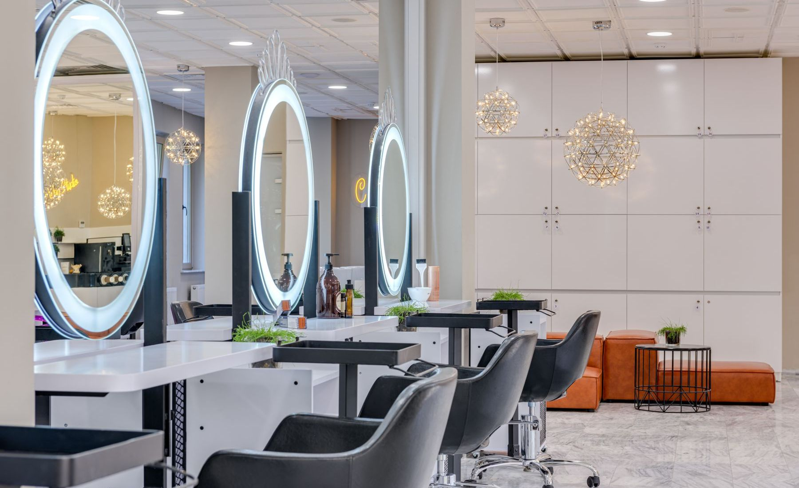
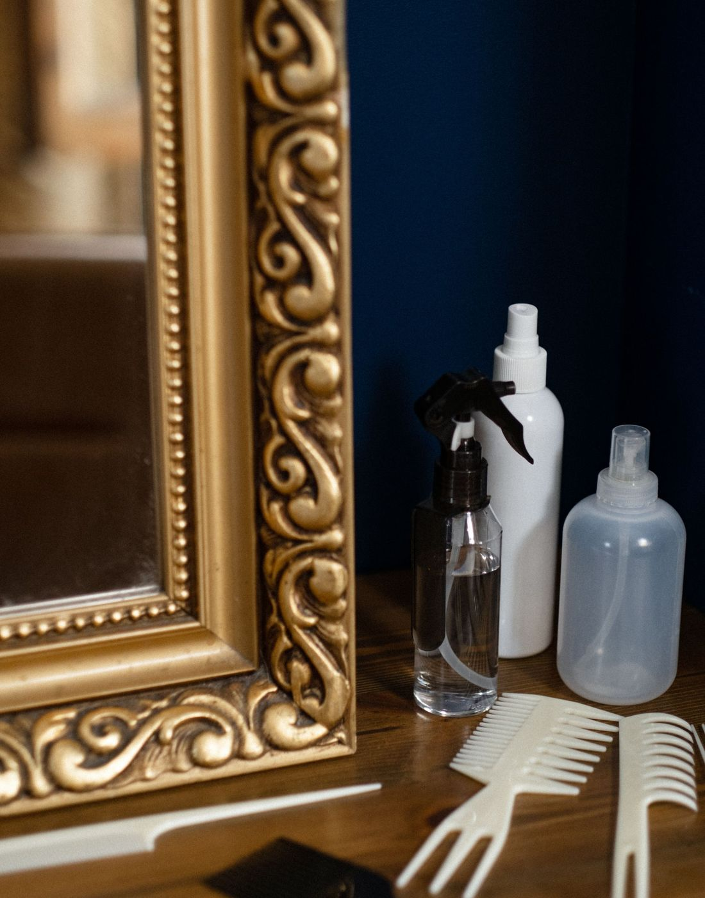
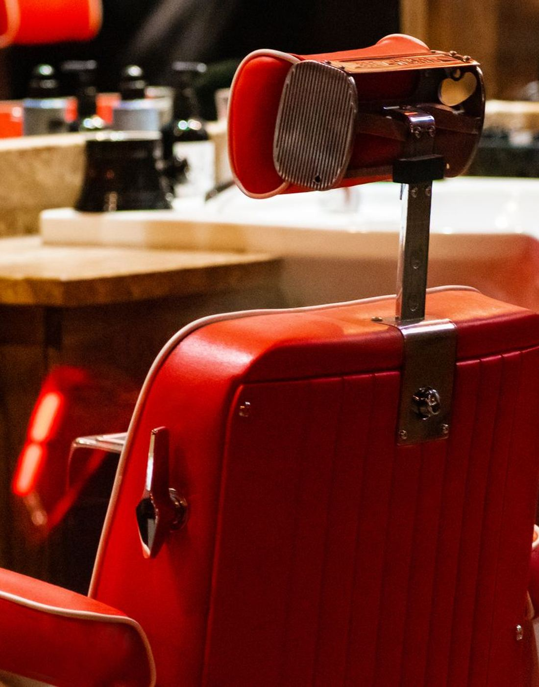

Corte y peinado
Desde un arreglo hasta un corte corto. Llama antes si vienes en hora pico.
Consultando el horario…
Llamar al 74378363
San Martín 313 · Cochabamba
Corte, color, peinado, maquillaje y barbería. Casi esquina Ecuador. El turno se pide al 74378363.
El trabajo
Corte, color, barbería y maquillaje. El color se cotiza al ver el cabello. Esa primera revisión no tiene costo.
Desde un arreglo hasta un corte corto. Llama antes si vienes en hora pico.

La cotización depende del largo y de si hay decoloración. En esa decoloración usan protector Olaplex, y trabajan con L'Oréal.

El corte de barbería se hace en el mismo salón, junto a la peluquería.
Larga duración, pestañas, pedrería y brillo. Si es para un evento, avísalo al llamar.
El local
Calle San Martín número 313, Cochabamba. En el mapa el código del lugar es JR6V+4X. 4,2 en Google, sobre 303 reseñas.